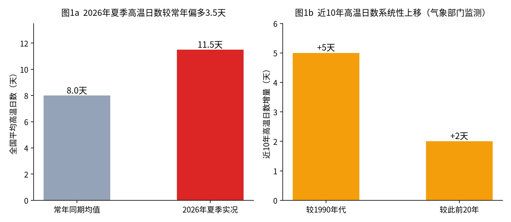
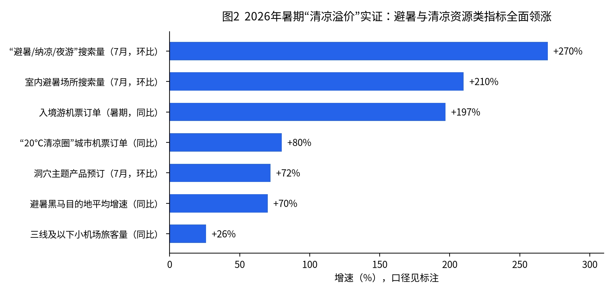
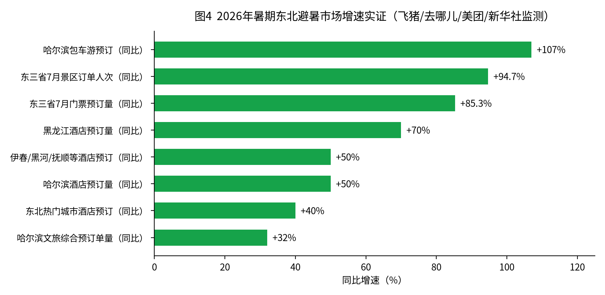
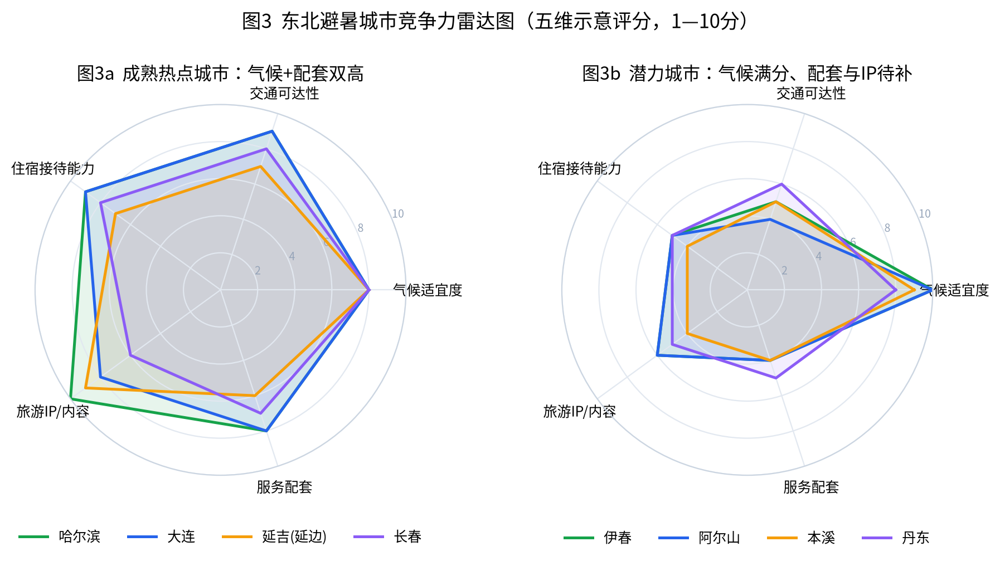

行业研究 · 气候与文旅专篇
气候变暖趋势下的暑期旅游目的地
—— 当"清凉"成为稀缺资源：暑期旅游版图的气候重构
◆ 气候基本面：2026年夏季全国均温历史第四高，74个气象站破极值，高温热浪至少持续到2040年趋于常态
◆ 市场实证：避暑搜索环比+270%，避暑黑马目的地增速近70%，县城酒店均价526元反超一线
◆ 五大演化方向：高纬高海拔长线、"20℃清凉圈"县域、滨海度假带、室内化夜间化、追凉旅居
◆ 未来热点城市预测：四个梯队+承压名单，附预测框架与风险提示
◆ 区域深度：东北避暑带专析——成熟热点、潜力城市与配套短板（附五维雷达图）
摘要
2026年暑期收官数据给出了一个清晰信号：在全行业"量升价弱"的背景下，唯有"清凉资源"相关目的地实现了量价齐升 ——避暑黑马城市增速近70%，"20℃清凉圈"县城机票订单增长超八成，抚松、昌黎等避暑县城的酒店均价甚至反超一线城市。这不是偶然的市场轮动，而是气候变暖趋势下暑期旅游版图系统性重构的开端。
核心判断
气候是未来十年暑期旅游最确定的结构性变量 ：国家气候中心研判至少到2040年变暖仍将持续、高温热浪趋于常态——"哪里凉快去哪里"将从年度现象固化为暑期出游的底层逻辑。"清凉"正在获得定价权 ：避暑旅游市场规模已达1.2万亿—1.5万亿元；2026年暑期，清凉资源型目的地是全链条降价中唯一具备提价能力的板块。未来热点城市呈四个梯队展开 ：避暑核心枢纽（昆明、贵阳、西宁等）→ 高成长黑马（伊犁、阿勒泰、大同等）→ 县域清凉圈（昭苏、荔波、安吉等）→ 特色形态城市（重庆洞穴避暑、恩施旅居等）。气候红利伴随气候风险 ：台风、暴雨、强对流同样在增多，滨海与山地目的地的运营扰动、生态承载与基础设施是"清凉溢价"能否兑现的约束条件。
一、气候基本面：变暖不是假设，而是正在计价的变量
1.1 2026年夏季实况：历史第四高温的夏天
中国气象局9月2日发布的夏季气候盘点显示，2026年夏季（6—8月）全国平均气温22.1℃、较常年偏高0.9℃，为历史同期第四高 ；全国平均高温日数11.5天、较常年（8.0天）偏多3.5天；74个国家气象站日最高气温达到或突破历史极值 ；7月2日至8月28日的高温过程持续58天；7月21日吐鲁番东坎站49.8℃刷新全国国家气象站观测纪录。高温呈"西强东弱"格局——新疆平均气温创历史同期最高，海南第二高，西藏、宁夏第三高。
1.2 长期趋势：高温日数系统性上移，热浪趋于常态
气象部门对近三十年数据的分析显示：全国高温日数持续上升，近10年较此前20年增多2天、较1990年代增多5天 ；全国2426个城市中1776个（73.2%）高温日数增多；高温持续时间平均3.6天，222个城市超10天。
国家气候中心研判：至少到2040年，气候系统变暖仍将持续，全球高温热浪将趋于常态 ——且这是最乐观情形下的估算。
变暖的另一面同样重要：2026年夏季台风生成和登陆个数均偏多、华北雨季雨量偏多74.2%、17次区域性强对流过程——极端天气的"双向增多"意味着气候既造就赢家，也制造扰动 。

二、气候如何重塑暑期旅游：需求、供给与定价权
2.1 需求端：数亿人的"逃离高温"刚需
文旅部数据中心对传统高温城市的调查显示，第三季度整体出游意愿高达94.6% ；中国旅游研究院测算，避暑旅游及相关市场规模已达1.2万亿—1.5万亿元 （2018年约5000亿元，暑期10亿出游人次中约5亿为避暑动机）。老龄化（银发候鸟）、亲子刚需（学生假期恰逢最热时段）与高温城市庞大人口基数，构成避暑需求的三重支撑——而气温每上一个台阶，这一需求就扩容一轮。
2.2 供给端与定价权：2026年暑期的"清凉溢价"实证
2026年暑期是"清凉=定价权"的首个完整验证季。在机票均价-7%~8%、酒店ADR普跌的大盘中，清凉资源型目的地全面领涨：

热门榜单被避暑城市占领 ：飞猪十大热门避暑目的地（昆明、乌鲁木齐、贵阳、青岛、哈尔滨、大连、兰州、大理、西宁、呼和浩特）与7月酒店预订TOP10中的贵阳、伊犁，均为气候型目的地；国内航线运力增幅前列为新疆、北京、云南。县域"清凉圈"量价齐升 ：去哪儿"20℃清凉圈"城市（丽水、毕节、六盘水、德令哈、大同）机票订单同比增幅超八成；十大热门县城（平潭、阳朔、安图、新源、九寨沟、荔波、雷山、特克斯、安吉、昭苏）多数为高海拔、临水或森林型清凉目的地；县城酒店平均支付价526元、抚松等县城均价反超一线城市 ——这是全行业唯一实现"价升"的板块。高温催生替代性供给 ：溶洞游预订环比+72%（织金洞搜索+112%、停留延长至1.5天）、室内场所搜索环比+210%、"日间室内+夜间夜游"模式定型——高温不仅转移了客流，还创造了新业态。
机制总结 ：气候变暖通过三条路径重塑暑期旅游——①客流再分配 ：从"火炉"流向高纬度、高海拔、滨海与洞穴；②时段再分配 ：从日间转向夜间，从7月下旬—8月上旬酷暑档转向错峰；③价值再分配 ：清凉资源获得溢价，高曝晒观光资产被折价。气象部门已将气候资源"资产化"——中国气象局连续发布全国避暑旅游路线（16条、覆盖21省60余市），"中国气候宜居城市"品牌（如浙江建德）可直接带动数十亿元投资。
三、暑期目的地演化的五大方向
方向 逻辑与代表目的地 2026年验证信号 1. 高纬高海拔长线避暑 夏季均温20℃上下的"天然空调"：新疆（伊犁、阿勒泰）、青甘（西宁、德令哈）、云贵高原（昆明、贵阳、六盘水）、东北（哈尔滨、长春、伊春） 避暑黑马平均增速近70%；新疆运力增幅全国前列；乌鲁木齐成为长线深度游核心承接地 2. "20℃清凉圈"县域 小机场+高铁下沉打开可达性，原生态+低密度承接"松弛感"需求：昭苏、特克斯、荔波、雷山、安图、抚松、安吉、丽水 三线以下小机场旅客+26%；县城酒店均价526元、部分反超一线；县域民宿入住超1.3晚 3. 滨海度假带 海风降温+亲子海滨刚需：青岛、大连、烟台、威海、秦皇岛（北戴河）、平潭、北海 青岛、大连进入避暑十强；海滨海岛榜单热度高；但台风偏多年份运营扰动上升 4. 室内化・夜间化城市文旅 高温"烤"出的替代供给：文博强市（北京、西安、成都）、洞穴资源地（贵州织金、重庆武隆）、夜游名城（长沙、重庆、开封） 室内场所搜索+210%；溶洞产品+72%；夜经济从"时段延伸"走向"场景再造" 5. 追凉旅居・康养候鸟 从"旅游"到"旅居"：恩施利川、贵州桐梓、云南大理、河北承德等避暑旅居带，银发+远程办公人群拉长停留 连住2晚以上占比从38%升至64%；银发"康养旅居"增长显著；利川式避暑地产年销数千套
四、未来暑期热点城市预测
4.1 预测框架
本专篇按四个维度对城市进行综合评估：①气候适宜度 （夏季均温、人体舒适日数——气象部门避暑评价核心指标）；②可达性改善 （高铁新线、支线机场、自驾环线）；③接待与内容供给 （酒店/民宿承载力、演艺赛事夜游等"内容资产"）；④增长动能验证 （2024—2026年连续三个暑期的预订与价格数据）。四者兼备的城市才能把"气候红利"转化为可持续的"暑期主场"。
4.2 四个梯队的热点城市名单
梯队 城市 核心逻辑与预测判断
第一梯队 确定性最高 昆明、贵阳、西宁、乌鲁木齐、哈尔滨、大连、青岛
气候资产+枢纽可达性+成熟接待体系三者兼备，已连续多年占据避暑榜单头部。预测：未来3—5年暑期"旺季主场"地位持续强化，量价齐升的确定性最高；贵阳（避暑+演出+算力会展）、西宁（青甘环线门户）弹性最大；核心风险是旺季接待过载与体验下滑。
第二梯队 增速最快 伊犁（伊宁）、阿勒泰、大理、兰州、呼和浩特、长春、大同、丽水、毕节、六盘水、德令哈
2026年验证增速最高的一批（黑马平均+70%、"20℃清凉圈"机票+80%）。预测：随支线航线加密与内容供给补齐，将从"黑马"转为"主流"，3年内进入主要平台避暑榜前列；伊犁、阿勒泰受制于季节极短与运力瓶颈，价格弹性最大；大同（文博+凉爽+影视IP）、丽水（长三角2小时清凉圈）区位红利显著。
第三梯队 弹性最大 昭苏、特克斯、新源、安图（长白山）、抚松、九寨沟、荔波、雷山、安吉、平潭、阳朔、昌黎
低基数+强气候资产+社交媒体放大，是"量价齐升"最陡峭的一批（部分县城酒店均价已反超一线）。预测：头部县城将复制"淄博—天水"式爆发但更可持续（气候资产可复购）；分化也最剧烈——基础设施、医疗应急与生态承载力决定谁能留住第二年的客人。
特色形态 模式创新 重庆（洞穴/夜经济）、武隆、织金、恩施利川、承德、北戴河、伊春
两类样本：一是"以热制热"的气候适应型（重庆把防空洞、洞穴、夜游做成产品，织金洞"地心避暑舱"停留1.5天）；二是"旅居型"（利川、承德承接候鸟长住，健康+地产+文旅复合变现）。预测：气候适应型产品将成为高温城市的标配，旅居型目的地受益于银发潮，暑期停留时长持续拉长。
4.3 承压提示：谁在气候重构中被折价
承压名单与逻辑 ：①传统"火炉"观光城市 的日间户外景区（长江中下游伏旱区、吐鲁番等极端高温区）暑期档期持续走弱，必须向夜游、室内、错峰转型——2026年杭州、丽江、张家界部分演艺场次下滑已是先行信号；②高曝晒、纯观光、缺乏遮荫水体的景区 在"体感经济"时代被系统性回避；③滨海目的地的台风折价 ：台风偏多年份，8月滨海行程取消与运营中断风险上升（2026年3个台风接连登陆同一地点为首次），需以保险、灵活退改与室内备选方案对冲。气候不是均匀的利好——它同时在重估每一类旅游资产。
五、区域深度：东北——从"冰雪主场"到"避暑主场"
东北是气候重构逻辑下最具代表性的区域样本：夏季平均气温20℃左右的"天然凉境"、完整的冰雪季接待底盘、以及尚未充分开发的森林/边境/民族文化资源，使其有条件把"冬季独热"的文旅格局升级为"冬夏双主场" 。三省一区已启动"旅居东北"避暑品牌协同（客源互送、线路互联），黑龙江提出打造"全国夏季避暑旅游引领区、世界级避暑胜地"。
5.1 2026年暑期实绩：东北避暑带全面放量
住宿 ：飞猪数据显示黑龙江暑期酒店预订量同比增长近70% ；去哪儿监测东北三省热门城市酒店预订量同比增长约40%，其中伊春、黑河、抚顺、哈尔滨、大兴安岭、齐齐哈尔、延边、锦州增幅超50% ；途家监测大兴安岭、伊春等地民宿预订量同比增长3倍以上。景区 ：美团数据显示东三省7月景区门票预订量同比+85.3%、订单人次+94.7%。标杆城市 ：哈尔滨跻身全国十大热门避暑目的地（同程长线避暑第六位），暑期酒店预订+50%、线路游+30%、包车游+107%，文旅综合预订单量+32%，"哈尔滨没有淡季"成为当地新体感；漠河位列全国清凉小城第七。客群与入境 ：长线避暑客群中30—45岁中青年家庭占比近四成；欧洲多城飞哈尔滨机票预订大幅上涨，沈阳、大连、哈尔滨位列入境游热门城市前十五。事件营销验证 ："东北超"赛事期间沈阳、哈尔滨异地游客较赛前增长70%以上——"赛事+避暑"叠加效应显著。

5.2 东北避暑城市分层：成熟热点与未来热点
分层 城市 判断依据与预测
成熟热点 量价齐升主力 哈尔滨、大连、沈阳、长春、延吉（延边）
气候+交通枢纽+接待体系+强IP四项俱全：哈尔滨以"冰雪IP反哺夏季"实现全季运营；大连兼具滨海与避暑双属性；延吉凭朝鲜族文化成为社交媒体顶流（小红书"延吉旅游"笔记超66万篇）。预测：未来3—5年稳居全国避暑第一梯队，哈尔滨有望冲击"世界级避暑城市"定位。
未来热点 增速最陡 伊春、漠河、黑河、大兴安岭、珲春、安图（长白山北坡）
2026年验证增速最高的一批（伊春等酒店预订+50%以上、民宿+3倍）：伊春"林都19℃"主打森林康养，受中老年与年轻"躺平式度假"双客群青睐；漠河以北极村+原始森林进入全国清凉小城前十；珲春、安图为"宝藏边境县城"代表。预测：将复制县域清凉圈的量价齐升路径，成为东北避暑带的增长极。
5.3 潜力洼地：气候满分、配套不足、IP待造的城市
东北还有一批城市，气候资产足以支撑避暑热点地位，但基础设施、接待能力或旅游IP尚未跟上 ——它们是下一轮投资与政策发力的最佳标的：
城市 气候与资源禀赋 短板诊断 破局方向 本溪 辽东山区生态屏障，森林覆盖率超60%，夏季凉爽湿润（中国气象局辽东避暑路线节点） 进山主干道仅双向两车道、周末沈阳客流即致大面积拥堵；停车与过夜配套不足，游客以"一日游打卡"为主，难以留宿 参照"黄山—天目山"都市后花园模式：拓宽路网+扩容停车+民宿集群，把沈阳千万级人口的短途客流转化为过夜消费 丹东 江海交汇、夏季体感舒适，边境风情+抗美援朝红色资源独特 旅游产品仍以断桥观光为主，缺乏度假型住宿与夜间内容；边境游IP声量远低于延吉 打造"界江度假+红色研学+朝鲜族美食"复合IP，对接大连—丹东滨海通道客流 阿尔山 （内蒙古东部，东北旅游圈）夏季均温约16—20℃，火山温泉+森林草原，避暑气候资产近乎满分 支线机场航班少且贵、铁路耗时长；旺季房源紧张与淡季闲置并存；缺乏留客的二次消费内容 加密航线与旅游专列、发展"温泉+森林康养"旅居产品，错峰运营压平淡旺季 牡丹江 镜泊湖+林海雪原，夏季清凉，冬季IP（雪乡）反差可资利用 "冬强夏弱"最典型：夏季知名度与产品线远弱于冬季，景区联动与线路组织松散 推动冰雪设施四季复用（参照吉林北山四季越野滑雪场"反季冰雪"样本），把雪乡IP延展为"林海避暑" 通化/白山 长白山西南门户，山地气候+矿泉资源+高句丽世界遗产 处在长白山主景区光环阴影下，自身住宿与交通接驳薄弱，IP辨识度低 绑定长白山环线做"门户驿站"，开发矿泉康养与遗产研学差异化产品 齐齐哈尔/佳木斯 湿地（扎龙）、界江资源，气候凉爽，2026年已现预订放量苗头 产品同质化、停留时间短，城市旅游服务体系初级 以湿地观鸟、界江游轮等生态深度产品拉长停留，承接哈尔滨溢出客流
5.4 五维雷达图：东北城市避暑竞争力对比
按本专篇预测框架的五个维度（气候适宜度、交通可达性、住宿接待能力、旅游IP/内容、服务配套）对代表城市进行示意评分（1—10分，依据上文公开数据与案例综合研判）：

雷达图解读 ：成熟热点城市（图3a）呈"满圆形"——五维均衡且IP突出，哈尔滨的旅游IP（冰雪+避暑双品牌）为全区域最强项；潜力城市（图3b）呈典型"尖刀形"——气候适宜度一维逼近满分（伊春、阿尔山达10分），但交通可达性、服务配套普遍只有4—5分 ，本溪的"气候9分 vs 配套4分"落差最能说明问题。对潜力城市而言，短板每补一维，气候资产的变现率就上一个台阶——这正是"配套先行、IP跟进"投资逻辑的量化表达。
5.5 东北避暑带的三点结论
"冬夏双主场"是东北文旅的确定性方向 ：气候变暖越深化，东北夏季的相对优势越大；冰雪季形成的接待底盘（酒店、机场、服务人力）夏季复用的边际成本极低。瓶颈不在需求而在供给 ：2026年暑期的拥堵（本溪）、房源紧张（阿尔山）证明需求已经先行到位；路网末端、过夜配套与二次消费内容是把"一日游流量"变成"过夜经济"的关键闸门。IP打造要错位 ：延吉证明民族文化IP的爆发力，哈尔滨证明反差营销的可持续性；潜力城市应避免复制"大而全"，转而深耕单点极致标签（林都伊春、北极漠河、界江丹东、温泉阿尔山）。
六、不确定性与风险
气候波动本身 ：变暖趋势确定，但单年可能出现"凉夏"或雨涝主导的夏季；台风、暴雨、山洪对山地县域可达性的冲击是清凉目的地的最大运营风险（2026年华北雨季雨量偏多74.2%、44个站降水破极值）。供给一拥而上 ：避暑热度可能诱发酒店民宿投资潮，若供给增速再度超过需求，"清凉溢价"会被价格战侵蚀——酒店业2023—2026年的教训（详见主报告附件一）随时可能在避暑带重演。生态与承载红线 ：高海拔草原、湖泊、溶洞等清凉资源生态脆弱，过载将直接摧毁资源本身；县域接待、医疗、应急能力是短板。政策与出行结构变量 ：春秋假推广将部分削峰暑期需求；免签与国际航线变化影响出入境分流方向。
七、建议
对目的地政府 ：将气候资源纳入城市资产负债表——申报气候宜居城市/避暑旅游目的地认证、与气象部门共建避暑指数发布机制；提前投资旺季承载力（交通末端、医疗应急、污水垃圾），"留住第二年的客人"比"接住第一年的流量"更重要。对文旅企业与投资者 ：布局向"清凉资产"倾斜——高海拔/滨海/森林/洞穴物业、避暑旅居长住产品、室内与夜间内容；在传统高温目的地投资"气候适应型改造"（遮荫动线、夜游产品、室内二消）；警惕在单一网红县城的高杠杆重资产押注。对OTA与内容平台 ：把"体感温度、舒适日数"做成和价格同级的搜索与推荐维度；开发"追凉指数""台风无忧退改"等气候型产品，将气候数据变现为服务。对保险与金融机构 ：高温险、台风行程险、景区气候营收保险等气候金融产品在文旅场景的渗透空间刚刚打开。
专篇结论 ：气候变暖正在把中国暑期旅游从"资源观光逻辑"切换到"体感经济逻辑" ——未来暑期的赢家不再是名气最大的景区，而是"20—25℃、有内容、到得了、住得下"的目的地。2026年暑期已经给出验证：在全行业以价换量的一年里，只有清凉在涨价。
参考资料
中国气象局9月新闻发布会：《2026年夏季全国天气气候特征》（全国均温22.1℃历史第四高、74站破极值、吐鲁番49.8℃），2026-09-02。
国家气候中心主任巢清尘专访（21世纪经济报道）：至少到2040年变暖持续、高温热浪趋于常态。
中国气象局公共气象服务中心：近30年高温日数监测（近10年较前20年+2天、较1990年代+5天，73.2%城市增多），全国避暑旅游发展报告发布会。
中国气象服务协会等：《中国"避暑消夏好去处"气象旅游研究报告》（60个好去处、平均温度中位数23.25℃）。
中国旅游研究院：《全国避暑旅游发展报告》（避暑旅游市场规模1.2万亿—1.5万亿元）。
中国气象局：《16条全国暑期避暑旅游路线》（覆盖21省60余市），2025-06。
飞猪：《2026年暑期出游快报》（十大避暑目的地、避暑黑马平均增速近70%、入境机票+197%），2026-08-28。
中国旅游新闻网：《暑期市场呈现四个特点》（去哪儿"20℃清凉圈"机票+80%、十大热门县城、小机场旅客+26%），2026-09-03。
21财经：《2026暑运收官：十亿级人口流动背后，旅游消费完成结构性切换》（县城酒店均价526元），2026-09-01。
央广网/同程旅行：《2026"地心避暑舱"洞穴游指南》（溶洞产品+72%、织金洞+112%）、室内避暑场所搜索+210%，2026-08。
国家气候中心："中国气候宜居城市"评审与浙江建德案例（57亿元投资带动）。
21经济网：《罕见高温来袭 避暑旅游经济正当时》（利川避暑地产案例、高温城市出游意愿94.6%）。
黑龙江日报/飞猪：《暑期黑龙江旅行预订量超去年同期》（酒店+70%、哈尔滨包车+107%），2026-08-28。
时代财经：《游客涌进东三省，酒店预订增长四成》（去哪儿东北热门城市榜、美团东三省门票+85.3%），2026。
同程旅行：《2026避暑游趋势报告》（哈尔滨长线避暑第六、漠河清凉小城第七），2026-07-17。
吉林省政府：《坐拥22℃天然凉境，吉林避暑游跳出"靠天吃饭"》（北山四季越野滑雪场反季样本、产品同质化诊断），2026-08-12。
黑龙江省：《黑龙江省旅游业高质量发展规划》（"避暑胜地，清凉龙江"、全国夏季避暑旅游引领区目标）。
当旅网：《沈阳人周末涌向本溪避暑，路上拥堵频发，道出东北旅游基建短板》，2026-08-26。
澎湃新闻/美团：《高温下避暑游备受欢迎，北方及滨海城市"赢麻了"》（延吉、安图、珲春宝藏县城；伊春民宿+3倍）。
说明：本专篇预测基于公开气候监测数据与2024—2026年暑期市场数据的趋势外推，城市名单为方向性研判而非投资建议；雷达图评分为基于文中公开数据与案例的分析性示意评分（1—10分），非量化指数；气候单年波动、政策变化与供给行为都可能改变具体城市的兑现节奏。